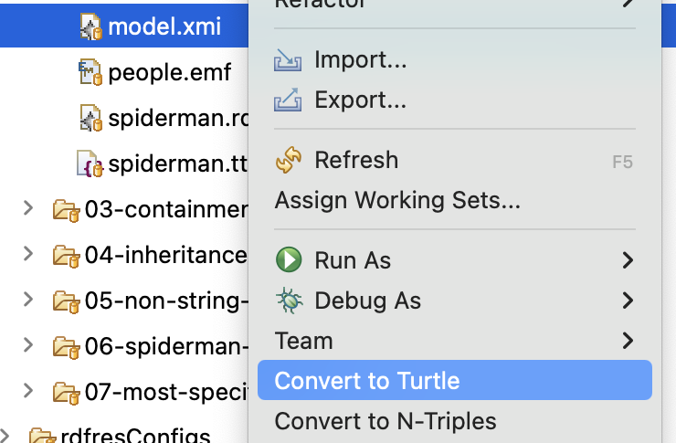

Epsilon EMC driver for RDF-backed EMF models¶
Epsilon can integrate with the Apache Jena library to load and save EMF-based models from/to RDF formats, such as Turtle, N-Triples, or RDF/XML.
Some of the advantages of this representation include:
- The RDF graph can include more information than that in the EMF metamodels: this information is accessible through dedicated APIs, and kept upon saving.
- The information about a single
EObjectcan be broken up across multiple RDF files, e.g. due to some of the information being more sensitive. This is transparent to EMF. - A subset of the W3C Web Ontology Language (OWL) is supported for inference, e.g. to decide on the
EClasses that a given RDF resource conforms to by looking at its features, rather than relying on a declared type (i.e. "duck-typing"). Specifically, Epsilon integrates the built-in Jena RDFS inference.
You can continue reading details below, or you can dive straight into these examples:
- Turtles: shows how a Turtle file can hold information outside the metamodel, and how this can be accessed via EOL.
- Book: shows how a single RDF node can become multiple
EObjects. - OrgChart: shows how the information about a certain
EObjectcan be broken up into multiple RDF documents (perhaps requiring different levels of access). - ETL: shows how it is possible to control the IRIs of the RDF nodes created when new
EObjects are instantiated, and how the driver can create new RDF files from scratch. - Picto: demonstrates an RDF-aware visualisation that can combine information from inside and outside the relevant metamodels.
- Maven: shows how to query an RDF file via Epsilon from a plain Java environment, only using Maven to fetch the dependencies.
EMF-RDF mapping¶
The interoperability implements a mapping between RDF and EMF inspired by the OMG MOF2RDF specification, with some simplifications.
We will use a small example to illustrate the mapping. Suppose we had this minimal Ecore metamodel:
classDiagram
class Organisation {
String name
}
class Team {
String name
}
class Employee {
String name
}
Organisation *-- Team: teams *
Team *-- Employee: employees *We could describe a small development team in Turtle like this:
@base <http://my.org/> .
@prefix rdf: <http://www.w3.org/1999/02/22-rdf-syntax-ns#> .
@prefix rdfs: <http://www.w3.org/2000/01/rdf-schema#> .
@prefix orgc: <http://york.ac.uk/emf-rdf/examples/orgchart#> .
<#organisation>
a orgc:Organisation ;
orgc:name "My Organisation" ;
orgc:teams ( <teams#dev> ) .
<teams#dev>
a orgc:Team ;
orgc:name "Development Team" ;
orgc:employees <employees#1234> ;
orgc:employees <employees#2345> .
<employees#1234>
a orgc:Employee ;
orgc:name "John Doe" .
<employees#2345>
a orgc:Employee ;
orgc:name "Jane Sue" .The mapping is as follows:
- A subject
sis anEObjectif there is a<s rdf:type ePackage:eClass>triple for it, whereePackageis the EPackage namespace URI plus#or/, andeClassis the name of the EClass in the EPackage that it conforms to. - An EObject subject can have
<s ePackage:eFeature value>triples for the values of itsEFeatures, whereePackagefollows the same rules as above, andeFeatureis the name of the feature. - We currently assume that a given EClass cannot have two features with the same name.
- The value can be other RDF resources (for
EReferences), or literales (forEAttributes). - Multi-valued features are supported via containers or lists.
Note: the mapping allows for the same RDF resource to be deserialised into multiple EObjects, if there are multiple rdf:type statements from disjoint EClass hierarchies.
EMF-RDF resource file (.rdfres)¶
The RDF EMC driver is based on a custom EMF resource which operates from dedicated YAML-based configuration files with the .rdfres extension.
Assuming the above Turtle file was saved in myorg.ttl, a minimal .rdfres that Epsilon would be able to load and save from would be:
dataModels:
- myorg.ttlThe available keys in the .rdfres format are as follows:
dataModels(mandatory): list of one or more locations containing the statements for theEObjects. These will be typically relative paths from the.rdfresto the relevant RDF files. Epsilon supports all the file formats implemented by Jena, as it uses its RIOT system for I/O.defaultModelNamespace(optional): the default namespace to use for the underlying RDF resources when creating newEObjects.multiValueAttributeMode(optional): string indicating the default RDF data structure to use for newly set multi-valued features.schemaModels(optional): list of zero or more locations containing the OWL schemas to be used for inference over the union graph formed by all the data models.EObjects will not be deserialised from these locations.validationMode(optional): string indicating the internal consistency checking mode to be used. By default, no checking is done.
Default namespace for new EObjects¶
Creating an EObject in an RDF-backed model will result in creating an RDF node (specifically, an RDF resource), which needs an IRI (a generalised URI).
These IRIs are generated by combining the default model namespace (as set in the defaultModelNamespace key of the .rdfres) with a UUID.
For example, if the namespace was set to http://foo/bar/example#, one possible IRI for the RDF resource backing a new EObject would be http://foo/bar/example#_6sDDMIgJEfC2g6UdYdL1hg.
The IRI must be absolute, e.g. by starting with file:// or http://.
If you provide an invalid IRI, it will be ignored, and Epsilon will fall back to using the IRI of the first data model as the default model namespace.
If a default model namespace is not provided in the .rdfres file, the resource will fall back to the IRI mentioned in the blank prefix (PREFIX : <IRI>) in the first data model.
If such a prefix is not provided either, Epsilon will fall back again to using the IRI of the first data model as the default model namespace.
Internal consistency checking¶
Jena can perform some consistency checks between the statements in the RDF graph, and the OWL classes mentioned in the schema models.
These checks can be controlled through the validationMode key.
The following validation modes are available :
none: no checking is done. This is the default, for performance.jena-valid: validation passes if the model has no internal inconsistencies, even though there may be some warnings.jena-clean: validation passes if the model has no internal inconsistencies and there are no warnings.
Multi-valued features¶
EFeatures with a maximum cardinality greater than 1 ("multi-valued features") are represented through RDF containers or RDF lists.
The unique and ordered flags are supported: uniqueness checks are delegated to the EMF ELists, which ensure that the same element cannot be present multiple times.
The resource will opt to update the RDF representation of a multi-value attribute based on its current data structure (container/list) in the RDF data model.
However, when there is no existing structure, the data structure will be chosen based on the value of the multiValueAttributeMode in the .rdfres file:
Container(the default): use RDF containers (Bag or Seq).List: use RDF lists.
Escaping to RDF¶
The EMF resource underlying this EMC driver maintains a two-way mapping between the EMF EObjects that have been deserialised from the RDF graph, and their underlying RDF nodes.
This means that it is possible to go from the EObject to the RDF node, and back:
- If we have a model called
Mand anEObjectvariable namedeob, we can useM.resource.getRDFResource(eob)to obtain the underlying Jena RDF Resource object. - Likewise, if we have a model called
Mand a JenaResourcevariable namedrdfRes, we can useM.resource.getEObjects(rdfRes)to obtain the collection of theEObjects associated to this resource. Note that while everyEObjectis backed by one RDF resource, a single RDF resource may result in multipleEObjects.
The following examples show some of the use cases enabled by this two-way mapping:
- Turtles: shows how it is possible to escape to RDF to follow a RDF-only
friendOfreference between twoEObjects. - Picto: shows how we can write a visualisation that shows both the underlying RDF nodes and the
EObjects that have been deserialised from them.
Multiple EObjects from same RDF node¶
Suppose we had these two EClasses from different EPackages:
classDiagram
class Book {
String title
String publisher
}
class FictionWork {
String title
String[*] genres
}We could have a set of RDF statements like these:
@base <http://eclipse.org/epsilon/rdf/books#> .
@prefix books: <http://eclipse.org/epsilon/rdf/books#> .
@prefix fiction: <http://eclipse.org/epsilon/rdf/fiction#> .
@prefix rdf: <http://www.w3.org/1999/02/22-rdf-syntax-ns#> .
<#quijote>
books:publisher "P Ublisher";
books:title "El Quijote";
fiction:genres ( "Narration" "Picaresque" "Chivalric romance" ) .On top of this data model, we could add a schema model with the following inference rules:
- A Book is anything with a title and a publisher.
- A FictionWork is anything with a title.
- Book titles are equivalent to FictionWork titles.
The built-in RDFS inference supported by this driver would therefore compute that <http://eclipse.org/epsilon/rdf/books#quijote> is both a Book and a FictionWork (where the title of the FictionWork is also "El Quijote").
This means that the same RDF node will be deserialised into multiple EObjects, each with its own subset of the information.
Changes to these separate EObjects will be persisted to the same underlying RDF node, although re-inferencing is currently not supported (i.e. changing the name of the Book will not change the name of the FictionWork).
To experiment with this behaviour, please consult the RDF book example in the Epsilon GitHub repository.
Creating a model from scratch¶
It is possible to use this EMC driver with readOnLoad set to false (i.e. without loading an .rdfres file).
In this scenario, Epsilon will set up in-memory data models based on the in-memory configuration of the underlying EMF resource.
Given an RdfEmfModel m (from the EMC driver), the underlying RDF-backed EMF resource can be obtained via:
RDFGraphResourceImpl resource = (RDFGraphResourceImpl) m.getResource();The in-memory configuration can be then accessed via resource.getConfig().
There are several points to consider about its configuration:
- If no data models have been specified, Epsilon will add a
.ttldata model based on the URI of the resource (i.e.file://path/to/file.rdfreswill result infile://path/to/file.ttlbeing created upon save).platform:URLs are supported in this way as well when running from the Eclipse IDE. - No schema models will be used in this scenario: the expectation is that modifying an resource without loading it is for creating brand new graphs, rather than for performing reasoning on existing graphs.
- Saving the resource in this scenario will also write the configuration to the URI of the resource. If this is undesirable, call
resource.setConfigSaved(false)before saving.
Note that configurations are not saved by default for resources that were loaded before any changes were made.
This can be changed by calling resource.setConfigSaved(true) before saving.
Specifying custom RDF IRIs during instance creation¶
The underlying EMF resource (see above) supports creating EObjects with arbitrary IRIs through its createInstanceAt(EClass eClass, String iri) method.
The ETL example shows how it can be used in combination with ETL "to" initializers.
Working with RDF XML literals¶
RDF supports defining XML literals, whose content is an XML document fragment. These are parsed by the underlying Jena library as instances of DocumentFragment.
If you need to deserialise a property whose values will be XML literals, we recommend defining in your metamodel an EMF EDataType whose instanceClassName is DocumentFragment.
You can then use it as the data type of any relevant attribute.
For example, in the Eclipse Emfatic notation, it would look like this:
datatype EXMLLiteral : org.w3c.dom.DocumentFragment;
class Requirement {
attr EXMLLiteral title;
}In modularised Java codebases, accessing this feature via reflection (e.g. from an Epsilon program) may cause an error message like this:
module java.xml does not "exports com.sun.org.apache.xerces.internal.dom" to unnamed moduleIn this case, you may need a flag like the following to your JVM options:
--add-opens=java.xml/com.sun.org.apache.xerces.internal.dom=ALL-UNNAMEDConverting an XMI file to RDF formats¶
The "RDF-Based EMF Resource Developer Tools" feature includes converters from XMI to the Turtle and N-Triples serialisation formats for RDF.
To use them, right-click on a file with the .xmi or .model extensions in the Eclipse "Project Explorer" or "Package Explorer" views, and select the appropriate option:
